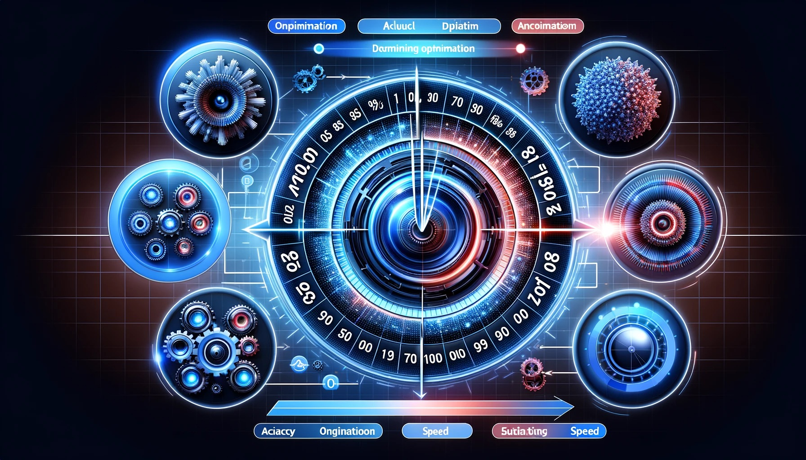

머신러닝의 개요#
머신러닝의 정의#
{kind=link}
기본 정의: 머신러닝은 컴퓨터가 인간과 유사한 학습 능력을 가질 수 있도록 하는 연구 분야이다. 이는 컴퓨터에게 데이터를 기반으로 학습하고, 그 학습을 통해 스스로 예측하거나 결정을 내릴 수 있는 능력을 부여하는 것을 포함한다.
역사적 배경: 1959년 아서 새무얼(Arthur Samuel)에 의해 처음 정의되었으며, 그는 머신러닝을 ‘컴퓨터에 학습할 수 있는 능력을 부여하기 위한 연구 분야’로 설명했다.
톰 미첼의 정의 (1998년): 톰 미첼은 머신러닝을 더 구체적으로 정의하여, 컴퓨터 프로그램이 경험 E로부터 학습하는 것이라고 설명했다. 여기서 ‘경험 E’란 데이터를 의미하며, 이 데이터를 기반으로 컴퓨터는 특정 작업 T에서 성능 P를 향상시킨다.
핵심 개념: ‘머신(Machine)’은 컴퓨터를, ‘러닝(Learning)’은 학습을 의미한다. 따라서 머신러닝은 ‘컴퓨터를 통한 학습’이라는 개념을 나타낸다.
데이터 중심의 접근: 머신러닝은 데이터에서 유용한 패턴, 규칙, 지식을 추출하는 작업이다. 이는 프로그래밍을 통해 직접 규칙을 정의하는 대신, 데이터로부터 컴퓨터가 스스로 규칙을 학습하게 함으로써 이루어진다.
응용 분야: 머신러닝은 프로그래밍하기 어려운 복잡한 작업의 해결에 주로 활용된다. 예를 들어, 얼굴 인식, 음성 인식, 추천 시스템, 의료 진단 등 다양한 분야에서 응용되고 있다.
머신러닝의 역사적 배경#
1952년 - 새무얼(Samuel)의 체커(Checker) 프로그램
최초의 머신러닝 프로그램으로 간주됩니다.
체커 게임은 당시 가장 복잡한 게임 프로그램 중 하나였으며, 이 프로그램은 경험으로부터 학습하는 방법을 사용했습니다.
이 초기의 머신러닝 접근 방식은 나중에 알파고와 같은 AI 바둑 소프트웨어 개발의 기초가 되었습니다.
연도별 주요 개발 모델과 특징
1952년, Arthur Samuel
모델: Checker Program
특징: 최초의 자기학습 프로그램, 강화학습의 초기 형태
1957년, Frank Rosenblatt
모델: Perceptron
특징: 최초의 신경망 모델, 단층 퍼셉트론으로 간단한 패턴 인식 가능
1986년, Rumelhart, Hinton 등
모델: Multilayer Perceptron
특징: 다층 퍼셉트론, 역전파(back-propagation) 알고리즘 도입
1986년, Ross Quinlan
모델: Decision Tree (ID3)
특징: 의사결정 나무, ID3 알고리즘을 사용한 분류 모델
1995년, Vapnik, Cortes
모델: Support Vector Machine
특징: 고차원 공간에서의 이진 분류를 위한 강력한 알고리즘
연도 |
개발자 |
모델 |
특징 또는 종류 |
|---|---|---|---|
1952년 |
Arthur Samuel |
Checker Program |
최초의 자기학습 프로그램, 강화학습의 초기 형태 |
1957년 |
Frank Rosenblatt |
Perceptron |
최초의 신경망 모델, 단층 퍼셉트론으로 간단한 패턴 인식 |
1986년 |
Rumelhart, Hinton 등 |
Multilayer Perceptron |
다층 퍼셉트론, 역전파(back-propagation) 알고리즘 도입 |
1986년 |
Ross Quinlan |
Decision Tree (ID3) |
의사결정 나무, ID3 알고리즘을 사용한 분류 모델 |
1995년 |
Vapnik, Cortes |
Support Vector Machine |
고차원 공간에서의 이진 분류를 위한 강력한 알고리즘 |
머신러닝의 학습 개념#

기본 학습 개념: 머신러닝에서 학습이란 컴퓨터가 데이터로부터 패턴을 인식하고, 이를 기반으로 예측이나 결정을 내리는 과정입니다.
간단한 학습 예시 설명:
데이터 쌍의 입력: 학습의 시작점은 데이터 쌍의 입력입니다. 예를 들어, 입력과 출력이 다음과 같은 쌍으로 제공될 수 있습니다: (1, 2), (2, 4), (4, 8), (7, 14), (5, 10), … 이 데이터는 모델에 의해 분석되어 학습됩니다.
학습 과정: 머신러닝 모델은 제공된 데이터 쌍을 분석하여, 입력 값과 출력 값 사이의 관계를 학습합니다. 위 예시에서, 모델은 출력이 입력 값의 2배라는 패턴을 발견하게 됩니다.
결과 예측: 학습이 완료된 후, 모델은 새로운 입력값에 대한 출력값을 예측할 수 있습니다. 예를 들어, 새로운 입력값 (3, ?), (8, ?)에 대해 모델은 각각 6과 16이라고 예측합니다. 이 예측은 학습된 패턴을 기반으로 합니다.
머신러닝#

전통적인 프로그래밍의 특징:
프로그래머는 모든 가능한 상황에 대한 규칙을 명시적으로 코딩해야 합니다. 이러한 접근 방식은 예측 가능하고 명확한 로직이 필요한 작업에 적합합니다.
규칙이 많아지거나 복잡해질수록, 유지 관리와 업데이트가 어려워집니다. 이는 시스템의 확장성과 유연성에 제한을 가져올 수 있습니다.
머신러닝의 특징:
머신러닝은 데이터와 결과(출력)를 기반으로 규칙을 자동으로 학습합니다. 이를 통해 시간이 지남에 따라 시스템이 더 효율적으로 되는 경향이 있습니다.
머신러닝 모델은 주어진 입력 데이터와 그에 대응하는 출력 데이터를 분석하여, 이 데이터 사이의 패턴을 학습하고 새로운 데이터에 대해 예측을 수행합니다.
기본적인 작동 방식의 차이:
전통적 프로그래밍에서는 ‘데이터 + 규칙 = 출력’의 방식으로 작동합니다. 여기서 규칙은 프로그래머에 의해 정의됩니다.
머신러닝에서는 ‘데이터 + 출력 = 규칙’의 방식으로 작동합니다. 즉, 모델은 입력 데이터와 그에 해당하는 출력을 바탕으로 규칙을 ‘학습’하게 됩니다.
머신러닝과 인공지능과의 관계#
{kind=link}
머신러닝과 인공지능의 관계:
머신러닝은 인공지능(AI)의 한 부분으로 분류됩니다. 인공지능은 머신러닝을 포함하는 보다 넓은 개념이며, 더 다양한 기술과 접근 방식을 포함합니다.
인공지능은 인간과 유사한 지능을 구현하는 것을 목표로 하며, 이는 추론, 학습, 계획 및 문제 해결 능력을 포함합니다. 머신러닝은 이 중 학습 부분에 초점을 맞춥니다.
머신러닝과 인공지능의 차이점:
머신러닝은 데이터로부터 학습하여 패턴을 인식하고 예측하는 데 중점을 둡니다. 이는 주로 통계적 방법과 알고리즘을 사용하여 데이터에서 지식을 추출하는 과정입니다.
인공지능은 획득한 지식을 활용하여 인간과 유사한 방식으로 추론하고, 문제를 해결하며, 의사결정을 내릴 수 있는 시스템을 개발하는 것을 목표로 합니다.
머신러닝과 인공지능의 비교:
구분
머신러닝
인공지능
정의
데이터를 기반으로 패턴을 학습하고 예측하는 시스템
인간과 유사한 지능을 가진 컴퓨터 시스템의 구현
주요 활동
데이터를 통한 학습과 패턴 인식
지식의 획득, 학습, 추론, 문제 해결 및 의사결정
구현과 실현
데이터 분석과 예측을 통한 효과적인 의사결정 지원
자동화된 의사결정, 자연어 처리, 로봇공학 등의 복잡한 문제 해결
개발 목표
특정 작업에 대해 스스로 학습하고 개선하는 알고리즘 개발
인간처럼 사고하고 학습할 수 있는 지능적 시스템의 개발
응용 분야
분류, 회귀 분석, 추천 시스템, 패턴 인식 등
음성 인식, 이미지 분석, 자율 주행 차량, 로봇공학 등
머신러닝 과정에서 고려 사항들#

데이터의 적합성과 가능성 평가:
주어진 데이터로부터 원하는 답을 찾을 수 있는지 평가합니다. 이는 문제의 성격과 데이터의 관련성을 고려하여 결정됩니다.
문제 해결을 위해 충분하고 적절한 데이터가 있는지 확인합니다. 데이터의 양뿐만 아니라 품질과 다양성도 중요합니다.
적절한 머신러닝 기법의 선택:
문제의 종류(분류, 회귀, 클러스터링 등)에 따라 적합한 머신러닝 기법을 선정합니다.
다양한 알고리즘(결정 트리, 랜덤 포레스트, 신경망 등)의 장단점을 비교하여 가장 적합한 방법을 선택합니다.
데이터 특성의 추출과 이해:
추출할 데이터의 특성(특징)을 결정합니다. 이는 문제의 성격과 분석 목적에 따라 달라집니다.
특성 공학을 통해 데이터에서 유용한 정보를 추출하고, 필요에 따라 데이터를 전처리합니다.
모델의 결론 설정과 평가:
머신러닝 모델이 도출할 결론의 종류를 설정합니다. 예를 들어, 예측 값, 분류 범주, 추천 항목 등이 될 수 있습니다.
모델의 성능을 평가하는 기준을 설정하고, 테스트 데이터를 사용하여 모델을 평가합니다.
모델의 실제 응용과 활용:
생성된 모델의 출력을 실제 응용에 어떻게 통합할 것인지 계획합니다. 이는 모델의 실질적인 사용 방법과 환경을 고려해야 합니다.
모델의 예측 결과를 비즈니스 결정, 제품 개선, 고객 서비스 등에 어떻게 활용할지 고려합니다.
머신러닝의 활용 분야#

머신러닝의 산업별 다양한 활용:
머신러닝은 의료, 금융, 교육, 제조 등 다양한 산업 분야에서 활용될 수 있습니다. 이는 데이터 기반 의사결정, 예측 분석, 패턴 인식 등 다양한 형태로 나타납니다.
최근에는 딥러닝 기술의 발전으로 이미지 및 음성 인식, 자연어 처리 등의 분야에서 획기적인 성과를 거두고 있습니다.
데이터 과학자의 역할과 중요성:
머신러닝 기술을 통해 빅데이터를 분석하고 가치 있는 통찰을 얻는 데이터과학자의 수요가 급증하고 있습니다. 이들은 데이터를 분석하고, 예측 모델을 개발하여 비즈니스 전략과 의사결정에 기여합니다.
복잡한 문제 해결에의 활용:
머신러닝은 자율주행 자동차, 문자 인식, 의료 진단 등 복잡하고 알고리즘 개발이 어려운 문제를 해결하는 데 널리 사용됩니다. 이러한 기술은 사람의 능력을 보완하거나 대체할 수 있는 영역에서 특히 중요합니다.
머신러닝의 다양한 응용 분야:
활용 분야
응용 예시
영상 인식
문자 인식(OCR), 물체 및 장면 인식, 의료 영상 분석
얼굴 인식
소셜 미디어의 얼굴 인식 기능, 보안 시스템 내 생체 인식
음성 인식
음성 비서(Bixby, Siri, Alexa), 음성 대화 시스템
자연어 처리
자동 번역 시스템(Google Translate), 감정 분석
정보 검색
스팸 이메일 필터링, 피싱 이메일 탐지
검색 엔진
사용자 맞춤형 콘텐츠 추천(Netflix, YouTube), 검색 최적화
로보틱스
자율 주행 자동차, 드론을 이용한 배송, 산업용 로봇 자동화